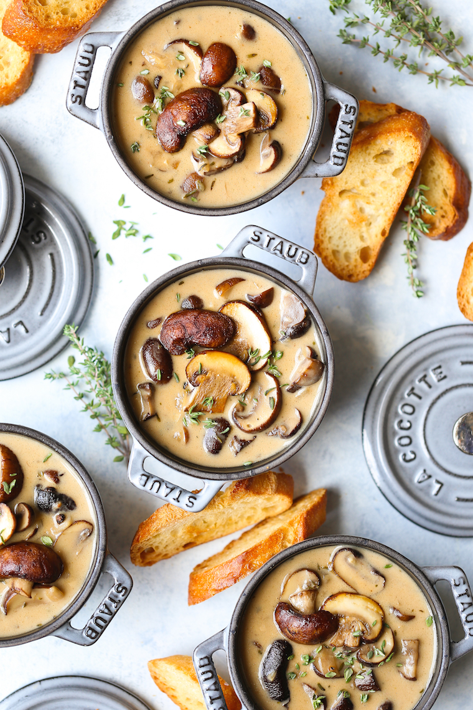

Creamy Roasted Mushroom Soup

Creamy Umami and Meaty and excellent soup for fall weather!
Ingredients:
- 2 pounds cremini mushrooms
- 3 tablespoons olive oil
- 4 cloves garlic, minced and divided
- 8 sprigs fresh thyme, divided
- Kosher salt and freshly ground black pepper, to taste
- 3 tablespoons unsalted butter
- 1 large sweet onion, diced
- 1/4 cup all-purpose flour
- 1/3 cup dry white wine
- 5 cups chicken stock
- 2 bay leaves
- 1/3 cup heavy cream
Directions:
- Preheat oven to 400 degrees F. Line a baking sheet with parchment paper.
- Place mushrooms in a single layer onto the prepared baking sheet. Add olive oil, half of the garlic and 4 sprigs thyme; season with salt and pepper, to taste. Gently toss to combine.
- Place into oven and bake for 20-30 minutes, or until browned and tender, stirring once. Let cool before coarsely chopping; set aside.
- Melt butter in a large stockpot or Dutch oven over medium heat. Add onion, and cook, stirring constantly, until golden and caramelized, about 10-15 minutes. Stir in remaining garlic until fragrant, about 1 minute.
- Whisk in flour until lightly browned, about 1 minute. Stir in wine, scraping any browned bits from the bottom of the pot.
- Stir in chicken stock, bay leaves and remaining thyme; season with salt and pepper, to taste. Bring to a boil; reduce heat and simmer until slightly reduced, about 15 minutes.
- Stir in mushrooms; simmer until thickened, about 10-15 additional minutes. Remove from heat; stir in heavy cream.
- Serve immediately.